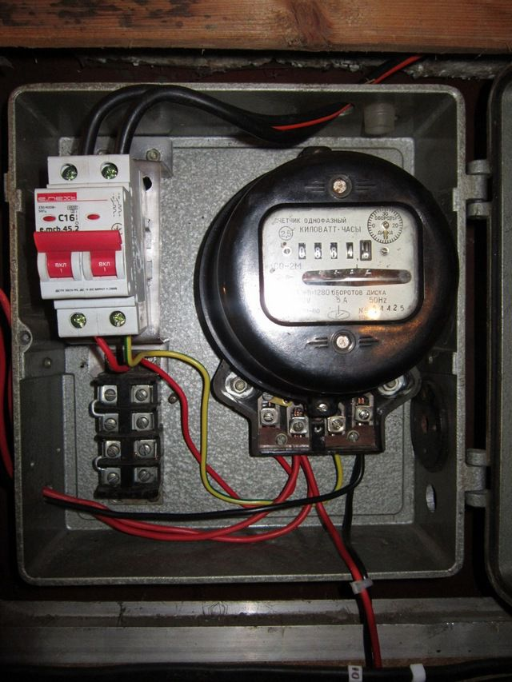
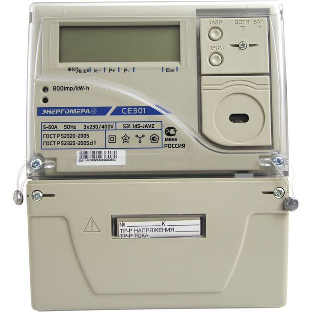
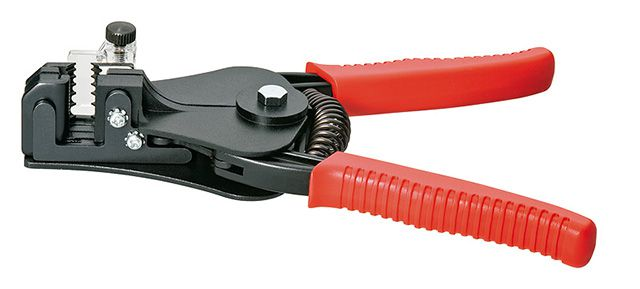
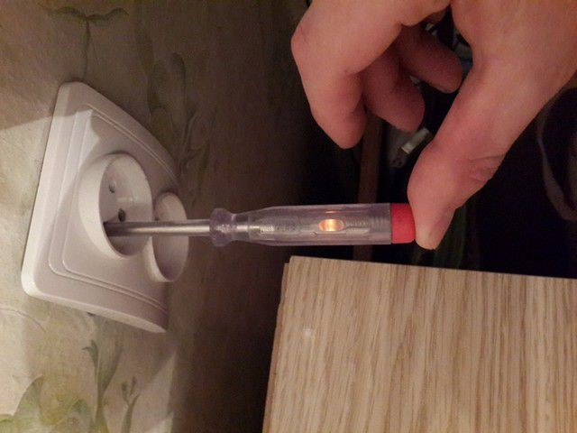
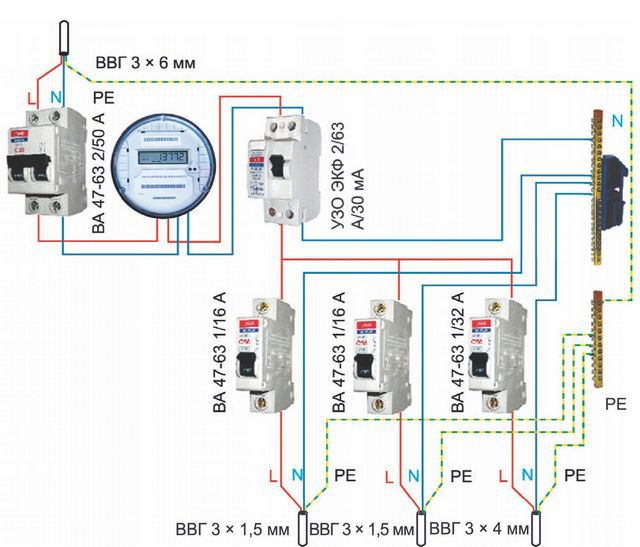
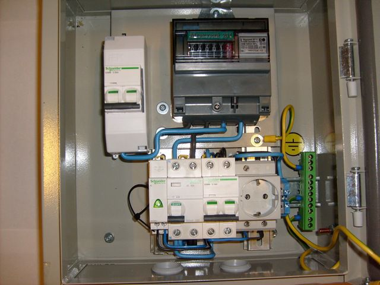

Как правило счетчики подключает электроснабжающая организация, но раз уж вы решили сделать это самостоятельно, для начала давайте разберемся как выбрать правильный счетчик. Для начала стоит убедиться что вы приобретаете электросчетчик той организации, которая в дальнейшем сможет обслуживать его. Также следует разобраться какой вид подключения вам нужен, трансформаторный или прямой. Трансформаторные счетчики подключаются непосредственно через специальный трансформатор. Как правило такие счетчики нужны для учета большой нагрузки, в основном в промышленности Прямое подключение, это когда счетчик подключается в силовую цепь. Почти все однофазные счетчики подключаются таким образом.
Виды конструкций электросчетчиков
Счетчики могут иметь различную конструкцию: индукционные или электромеханические счетчики, хорошо известные нам по диску, который вращается тем быстрее, чем больше протекающий ток, а значит, и потребляемая мощность. Диск приводится в движение магнитным полем катушек напряжения и тока, которые подключены соответственно параллельно и последовательно измеряемой нагрузке. Специальный механизм подсчитывает количество оборотов, по которым можно судить о потребленной мощности. Такие счетчики имеют низкий класс точности (1,5 и выше), поэтому постепенно уступают более современным моделям.
Электронные счетчики, приходящие на смену индукционным. Они имеют высокий класс точности (0,5—2,0), более надежны и компактны по размерам. Измерение в них происходит специальной электронной схемой, которая генерирует импульсы пропорционально нагрузке: чем она больше, тем выше будет частота следования импульсов. По количеству импульсов можно судить о потребленной мощности.
(В недалеком будущем все электрощитки будут электронными)
Очень важным преимуществом электронных счетчиков является возможность многотарифного учета, что позволяет включать мощные потребители энергии (стиральные и посудомоечные машины, водонагреватели) во время действия пониженного тарифа и тем самым сэкономить средства. Кроме этого, в некоторых моделях есть возможность дистанционного считывания показаний и программирования через различные интерфейсы: инфракрасный порт, RS-485, GSM, CAN и другие. Если планируется установка электросчетчика на улице, то лучше выбирать электронный счетчик, снабженный электромеханическим отсчетным устройством. При низких температурах жидкокристаллические дисплеи перестают отображать информацию, хотя счетчик исправно подсчитывает потребленные киловатт-часы.
Необходимые комплектующие и инструменты для установки электросчетчика
Для того чтобы установить однофазный электросчетчик понадобятся следующие комплектующие: Собственно сам электросчетчик. Приобретая прибор, следует обязательно убедиться в наличии штампа ОТК, а также пломбы на корпусе самого счетчика. Клеммная крышка пломбируется уже после подключения. Модель счетчика должна соответствовать нагрузке, которая описана в технических условиях – ТУ, о них можно легко узнать в электроснабжающей организации.
- Если счетчик будет устанавливаться в уже имеющийся электрощит или бокс, то следует убедиться в том, что крепления подходят для установки. Обычно счетчики крепятся на трех винтах. Если счетчик имеет крепление на DIN-рейку, а в щите ее нет, то ее легко можно приобрести в магазине и установить.
- Если счетчик будет устанавливаться в новый бокс, то следует приобрести и его. При установке на улице нужно приобретать бокс со степенью защиты не менее IP54, имеющий уплотнения крышки и специальные сальники для входящих и выходящих кабелей.
- Вместе с электросчетчиком обычно устанавливают модульное оборудование для защиты электропроводки и людей: автоматические выключатели, а в некоторых случаях и устройства защитного отключения – УЗО. Их необходимое количество и номиналы рассчитываются при проектировании системы электроснабжения, которое выполняют специалисты. Покупать такое оборудование лучше известных брендов и только в специализированных магазинах. Согласно ПУЭ до электросчетчика необходимо устанавливать двухполюсный автоматический выключатель, который позволяет производить обслуживание счетчика, а также защищает от коротких замыканий и перегрузок. Номинал выключателя должен соответствовать выделенной мощности и должен быть указан в ТУ на подключение.
- Для распределения и коммутации нуля (N) и защитного нуля (PE) в электрощитах применяют специальные шины, монтируемые как на DIN-рейку, так и в специальных местах крепления. При их покупке стоит учесть, что нулевую шину принято использовать с пластиковым держателем синего цвета, а шину защитного заземления – желтого или зеленого цветов. Некоторые электрощитки по умолчанию уже имеют в комплекте эти шины.
- Чтобы соединить все компоненты электрощита, необходим монтажный провод. Для этого используют многожильный медный провод марки ПВ-1. Использование многожильных проводов не рекомендуется, а если они и применяются в качестве входных и выходных кабелей, то на концы надо одевать и обжимать специальные наконечники соответствующего диаметра или облуживать паяльником.
- Для крепления электрощита или бокса на строительные конструкции, а также для монтажа счетчика DIN-реек и шин внутри электрощита понадобится набор крепежных элементов: саморезы, дюбеля, пластиковые стяжки.
- Если входящие и отходящие кабеля чаще всего имеют цветовую окраску изоляции, то монтажный провод ПВ-1 ее не имеет. Поэтому для маркировки фазных и нулевых проводов нужно иметь изоленту или термоусаживаемые трубки синего и красного цветов.
(Шина заземления защитного нуля .Обычно имеет желтый или зеленый цвет)
Для установки электросчетчика однофазного понадобятся следующие инструменты:
- Перфоратор с буром соответствующего дюбелям диаметра – для навешивания электрощита или бокса на строительные конструкции. Плоскогубцы. Хорошо, если их будет несколько, с разными размерами губок.
- Кусачки.
- Нож строительный.
- Съемник изоляции. 
- Рулетка.
- Линейка.
- Строительный уровень.
- Набор отверток.
- Индикаторная отвертка – для контроля наличия напряжения. 
- Паяльник. Он может понадобиться для обслуживания многожильного провода.
(Съемник изоляции значительно упростит монтаж)
(Индикаторная отвертка всегда определит наличие фазы)
Как правильно подключить электросчетчик однофазный
Перед тем как начинать работы по установке нового счетчика, следует убедиться в том, что подающая линия обесточена. Проверить наличие или отсутствие напряжение можно либо при помощи отвертки-индикатора, либо мультиметром. Установка счетчика включает ряд несложных технологических операций:
- После проверки отсутствия напряжения производится разметка места будущей установки щитка или бокса для счетчика. Оптимальная высота установки счетчика 1,6—1,7 метра от поверхности. Это наиболее удобная высота для снятия показаний счетчика и проведения каких-либо работ.
- При помощи перфоратора в намеченных местах бурятся отверстия в строительной конструкции, вставляются дюбеля и монтируется бокс для счетчика. Уровнем необходимо контролировать горизонтальность установки.
- Если счетчик монтируется на место старого, то после отключения всех проводов демонтируется старый счетчик.
- По схеме, которая может иметь множество вариантов, монтируется счетчик и модульное оборудование (Автоматические выключатели, УЗО, шины). При необходимости устанавливаются DIN-рейки, которые можно предварительно отрезать ножовкой до нужного размера. Модульное оборудование монтируется при помощи специальных фиксаторов либо пружинных защелок. Вводный двухполюсный автоматический выключатель лучше монтировать в специальном мини-боксе, который затем пломбирует электроснабжающая организация. Это исключит возможность подключения нагрузки до счетчика 
- Делается ввод кабелей: питающего и нагрузки (квартиры или дома). Если бокс устанавливается на улице, то применяются специальные сальники: резьбовые или резиновые, — которые уплотняют ввод кабеля в бокс, не позволяя проникать атмосферной влаге. Для этого резиновые сальники подрезаются ножом, а резьбовые затягиваются после того, как через них пропущен кабель.
- Разделываются концы кабелей при помощи ножа или специального инструмента. При этом надо следить за тем, чтобы при надрезе оболочки кабеля не повредить изоляцию проводов. Ввод кабеля через сальник должен быть в оболочке, оставляется еще 2—3 см, а остальная длина разделывается.
- В щитке оставляется запас кабелей, чтобы была возможность повторного монтажа. Обычно длину кабеля делают в два раза больше, чем это необходимо. При этом следует избегать резких поворотов, которые могут привести в дальнейшем к излому кабеля.
- Перед подключением вводного кабеля к двухполюсному автомату проверяется принадлежность проводников к фазе, рабочему нулю и защитному нулю (заземлению). Обычно фазный провод имеет коричневую или красную окраску изоляции, нулевой рабочий – синюю, а заземление – комбинированную желто-зеленую. Но бывают случаи, когда цвет изоляции может отличаться (см. рисунок). Для полной гарантии зачищают съемником изоляции провода на 10 мм, разводят их на безопасное расстояние, кратковременно включают напряжение и проверяют отверткой индикатором фазный провод. Затем мультиметром проверяют напряжение между фазным проводом, рабочим и защитным нулем. Оно должно составлять 220—230 В. После этого напряжение отключают.
- Вводный кабель подключается к вводному автомату. В левый верхний контакт заводится фазный провод, а в правый – нулевой рабочий. Провод заземления сразу заводится на соответствующую клемму, которая была смонтирована в щитке заранее. После этого контакты затягиваются отверткой. Через несколько минут следует сделать повторную затяжку, так как проводник под давлением клеммы слегка сожмется. Алюминиевые провода имеют неприятное свойство сжиматься в клеммах со временем. Электрики говорят про это: «Провода текут». Именно поэтому лучше всегда применять медные провода и кабеля, а алюминиевые периодически подтягивать.
-
С выхода двухполюсного автоматического выключателя фазу и рабочий ноль соединяют со счетчиком электроэнергии. Все однофазные счетчики подключаются четырьмя клеммами, причем их предназначение одинаково для счетчиков всех моделей:
- Клемма №1 – для входа фазного провода.
- Клемма №2 – выход фазы.
- Клемма №3 – вход рабочего нуля.
- Клемма №4 – выход рабочего нуля.

- Для коммутации всего модульного оборудования необходимо изготовить перемычки из провода ПВ-1. Для этого измеряется расстояние от одной клеммы до другой, плоскогубцами изгибается провод под прямым углом необходимое количество раз таким образом, чтобы провод свободно и без напряжения подходил к клемме. Изоляция зачищается только на такое расстояние, которое позволяет надежно закрепить провод в клемме модульного оборудования. Для автоматических выключателей, УЗО и клеммников изоляция зачищается на 10 мм, а для электросчетчика – 27 мм. Если в щитке установлены ряд автоматических выключателей, на которые необходимо раздать фазу, то делают перемычку из провода ПВ-1 без разрывов или применяют специальную гребенку, отрезав нужный размер ножовкой.
- Перемычки обязательно маркируют цветной изолентой или термоусаживаемой трубкой. Фазный провод красным цветом, а нулевой – синим. Провод заводится в клемму только оголенной частью, попадание изоляции недопустимо. При этом из модульного оборудования и счетчика не должны выглядывать оголенные части провода. Затяжку клемм модульного оборудования производят в два приема с перерывом в несколько минут.
- В современных счетчиков каждая клемма имеет два винта. После того как провод заводят в клемму, затягивают верхний винт. Затем проверяют надежность затяжки, потянув за провод. Только после этого затягивают нижний винт. Через несколько минут подтягивают еще раз.
- В последнюю очередь подключают кабеля нагрузок к автоматическим выключателям, а также к нулевой и заземляющей шине. После этого нужно тщательно проверить правильность сборки, затяжку клемм. Лучше, если это сделает специалист. Если все смонтировано правильно, то можно приглашать представителя электроснабжающей организации, который также проверит правильность монтажа, опломбирует вводной автоматический выключатель и счетчик. Составляется соответствующий акт, после чего можно включать напряжение и пользоваться новым электросчетчиком.
(Один из вариантов оборудования электрощита)
(Образец грамотно и красиво смонтированного электрощита)
Итоги
Монтаж электросчетчика лучше доверить квалифицированному специалисту, имеющему соответствующий допуск. Все работы по подключению должны проводиться только при снятом напряжении. Для оборудования щитка учета электроэнергии следует применять модульное оборудование только известных брендов. Номиналы автоматических выключателей и УЗО должны подбираться только специалистом.